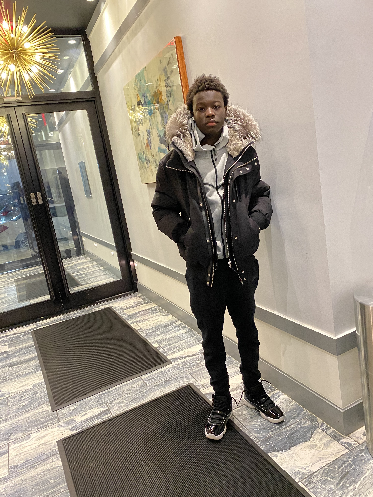
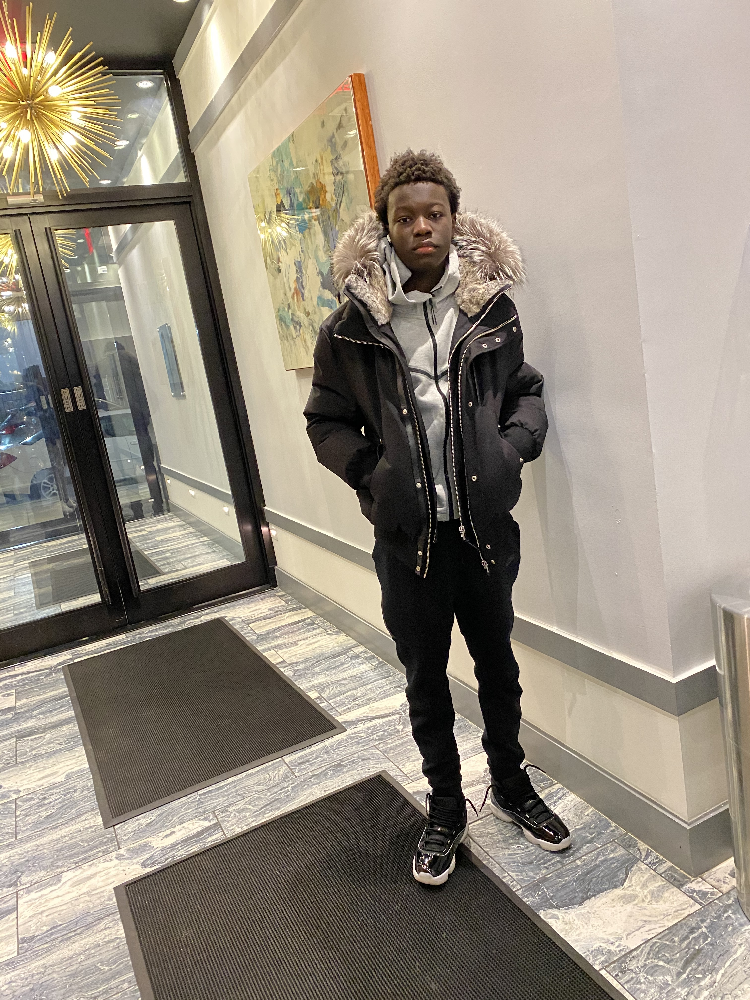

In COVID, staying home and having a remote job allowed me to make my own money. As I grew into maturity, I began to buy my own clothes and enhance my own fashion as I realized I shouldn't continue to ask my parents for my clothes and shoes. My sneaker collection kicked off and I started to look into affordable designer clothing.
The first outfit I put together is here:
(07.31.2020)
This was my first pair of Jordans, and they meant so much to me. Jordan 11 'Jubilee':
(Image 1: 11.29.2020; Image 2: 12/31/2020)
 

As time progressed, I updated the quality of the clothing and my pictures and this was my second outfit that I put together:
(05.15.2021)

By the time of my 17th birthday, I decided to speak out of my comfort zone to wear blue jeans and white shoes. I really enjoyed this day and I enjoyed it with my friends. I decided to do an actual photo shoot with a profressional photographers here. This is how my pictures came out:
(11.29.2021)
Going into my senior year, I was extremely anxious for my grauation picture and I really want to dress to impress. Those are images that go into my yearbook and I wanted to end high school on a good note. I brainstormed this outfit out months prior and this is how my images came out:
(03.17.2022)


At a young age, my parents dressed me up on Eid-Ul-Fitr. From decided to the color of the silk to the shoes I wore along with. In this time period of me expanding my fashion, I took it upon my self to be more creative and bring more variety to the colors of my bazins and match sneakers along with it
(Image 1: 05.13.2021; Image 2: 05.02.2022; Image 3: 07.09.2022)
.jpg)
.jpg)